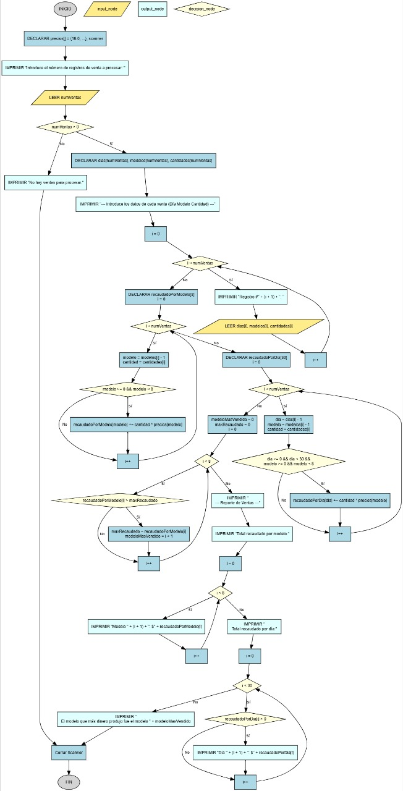

Análisis de Ventas de Fábrica
Una fábrica produce 8 modelos de productos. Se te pide escribir un programa que analice los registros de ventas para generar un reporte. El programa debe calcular el total recaudado por cada modelo, el total recaudado por día, y encontrar el modelo que generó más ingresos.

Requisitos
Todo el código debe estar dentro del método main.
- Usa un arreglo predefinido para los precios de los 8 modelos:
{ 10.0, 15.0, 12.5, 8.75, 9.5, 11.25, 14.0, 13.5 }. - Pide al usuario el número de registros de venta a procesar.
- Usa un bucle para leer cada registro. Cada registro consiste en tres números: Día, Modelo (1-8), y Cantidad.
- Calcula el total recaudado para cada uno de los 8 modelos.
- Calcula el total recaudado para cada día (asume un máximo de 30 días).
- Encuentra cuál de los 8 modelos generó la mayor cantidad de ingresos en total.
- Imprime un reporte final con todos los resultados.
Ejemplo de uso esperado
Introduce el número de registros de venta a procesar: 4
--- Introduce los datos de cada venta (Día Modelo Cantidad) ---
Registro #1: 1 1 10
Registro #2: 1 2 5
Registro #3: 2 1 2
Registro #4: 2 3 8
--- Reporte de Ventas ---
Total recaudado por modelo:
Modelo 1: $120.00
Modelo 2: $75.00
Modelo 3: $100.00
... (los demás modelos en $0.00)
Total recaudado por día:
Día 1: $175.00
Día 2: $120.00
El modelo que más dinero produjo fue el modelo 1